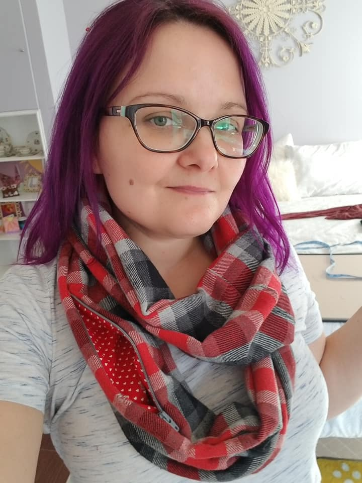

About Me
I have a Bachelor's degree in Communications from Florida State. I wanted to write and create but also craved a fast-paced work environement. After writing for the FSView newspaper and interning at a PR firm I decided to use my skills in Public Relations. Life happened and I took a haitus from working to raise a family. After that time the public relations game had changed because of social media and it was obvious I would have to relearn the field. Inspired by my husband who is a Software Developer I decided to learn software instead. I taught myself QA. I took Udemy courses on software testing and took the ISTQB to be certified in software testing. I worked for almost 4 years testing software as a Quality Assurance Engineer. I found some interesting bugs and really enjoyed mobile and API testing. However, I found myself not really interested in just QA. I didn't want to just test software anymore. I want to make software, awesome software.
I live in Kennesaw, GA with my husband Andy and our three children. I love sewing and have made some very cool costumes and some decent clothes. There is typically an unfinished jigsaw puzzle out in my house; I just finished my second 3000 piece puzzle! I love cats a lot, I am very thankful my husband stops me from becoming a crazy cat lady!